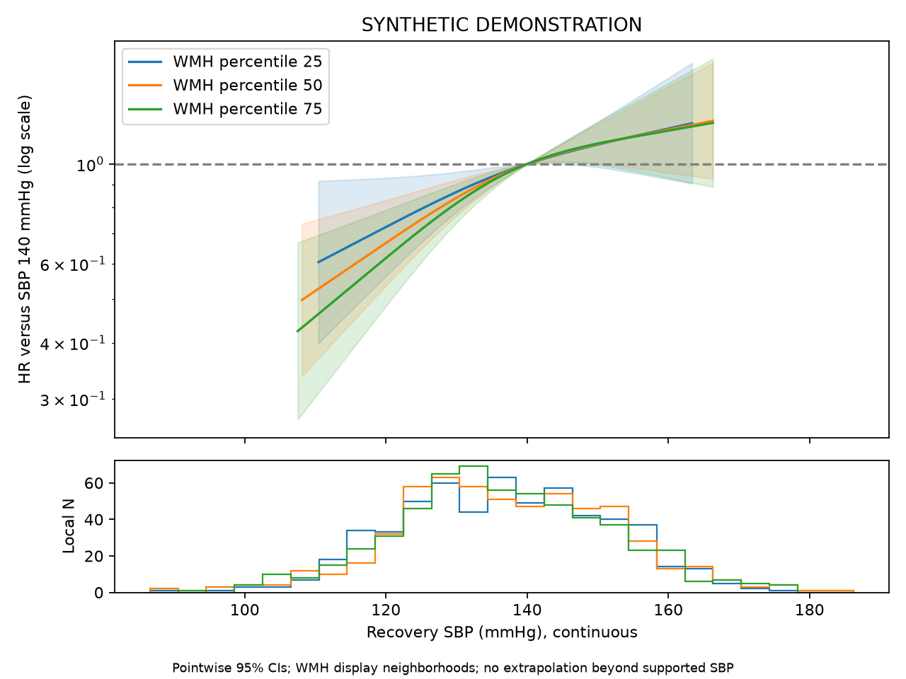

SYNTHETIC DEMONSTRATION — NOT PATIENT RESULTS
五项独立队列；不要求Hcy。患者行和ID仅保存在本地分析目录，不进入本报告。
| step | remaining | excluded_here |
|---|---|---|
| clinical_image_union | 2400 | 0 |
| adult_ischemic_stroke | 2400 | 0 |
| available_true_icv | 2400 | 0 |
| available_wmh_ml | 2400 | 0 |
| alive_at_month3 | 2400 | 0 |
| observed_recovery_sbp | 2399 | 1 |
| known_actual_visit_day | 2399 | 0 |
| known_five_year_status_and_time | 2399 | 0 |
| consistent_first_recurrence | 2399 | 0 |
| no_recurrence_before_or_on_visit | 2342 | 57 |
| no_observation_after_dated_death | 2310 | 32 |
| followup_after_visit | 2310 | 0 |
| analysis | study | tier | family | status | n | outcome_unknown | parameters | imputations | p | statistic | df1 | df2 | r | method | m | primary_terms |
|---|---|---|---|---|---|---|---|---|---|---|---|---|---|---|---|---|
| primary | bp | primary | cox | ESTIMATED | 2310 | 0 | 35 | 2 | 0.4014 | 0.9128 | 2 | 5.56e+09 | 1.643e-05 | D1 pooled multivariate Wald | 2 | sbp3_x_wmh_ml;sbp3_rcs_x_wmh_ml |
| complete_case | bp | sensitivity | cox | ESTIMATED | 2126 | 0 | 35 | 1 | 0.4045 | 0.9051 | 2 | inf | 0 | D1 pooled multivariate Wald | 1 | sbp3_x_wmh_ml;sbp3_rcs_x_wmh_ml |
| mean_arms | bp | sensitivity | cox | ESTIMATED | 2310 | 0 | 35 | 2 | 0.3409 | 1.076 | 2 | 4.054e+09 | 1.924e-05 | D1 pooled multivariate Wald | 2 | sbp3_x_wmh_ml;sbp3_rcs_x_wmh_ml |
| severe_wmh | bp | sensitivity | cox | ESTIMATED | 1037 | 0 | 35 | 2 | 0.6214 | 0.4757 | 2 | 1.148e+07 | 0.0003616 | D1 pooled multivariate Wald | 2 | sbp3_x_wmh_ml;sbp3_rcs_x_wmh_ml |
| month12_landmark | bp | sensitivity | cox | ESTIMATED | 2144 | 0 | 35 | 2 | 0.2202 | 1.513 | 2 | 3.402e+07 | 0.00021 | D1 pooled multivariate Wald | 2 | sbp3_x_wmh_ml;sbp3_rcs_x_wmh_ml |
| time_varying | bp | sensitivity | cox | ESTIMATED | 2310 | 0 | 41 | 2 | 0.5471 | 0.6032 | 2 | 7.199e+11 | 1.443e-06 | D1 pooled multivariate Wald | 2 | sbp3_x_wmh_ml_late;sbp3_rcs_x_wmh_ml_late |
多分类系数取指数表示 P(该状态)/P(独立) 的比值之比，不能标为HR。联合检验显著不代表每个系数都显著。

SBP始终连续建模；主图展示样条关联。140 mmHg仅为参照，固定点对比是补充表。阴影为逐点区间。
| estimate | se | lower | upper | p | df | m | within_variance | between_variance | term | scale | ratio | ratio_lower | ratio_upper |
|---|---|---|---|---|---|---|---|---|---|---|---|---|---|
| 0.2465 | 0.07502 | 0.09944 | 0.3935 | 0.001018 | 3.373e+08 | 2 | 0.005627 | 2.043e-07 | sbp3 | HR | 1.279 | 1.105 | 1.482 |
| -0.1227 | 0.0743 | -0.2683 | 0.02295 | 0.09873 | 5.892e+08 | 2 | 0.00552 | 1.516e-07 | sbp3_rcs | HR | 0.8846 | 0.7647 | 1.023 |
| 0.1174 | 0.1159 | -0.1098 | 0.3445 | 0.3112 | 3.341e+08 | 2 | 0.01343 | 4.897e-07 | wmh_ml | HR | 1.125 | 0.8961 | 1.411 |
| -0.01054 | 0.09952 | -0.2056 | 0.1845 | 0.9157 | 9.521e+08 | 2 | 0.009903 | 2.14e-07 | wmh_ml_rcs | HR | 0.9895 | 0.8142 | 1.203 |
| -0.08773 | 0.08335 | -0.2511 | 0.07564 | 0.2926 | 1.149e+08 | 2 | 0.006947 | 4.321e-07 | age | HR | 0.916 | 0.7779 | 1.079 |
| 0.1063 | 0.09747 | -0.08469 | 0.2974 | 0.2753 | 1.856e+08 | 2 | 0.009499 | 4.648e-07 | age_rcs | HR | 1.112 | 0.9188 | 1.346 |
| 0.004849 | 0.075 | -0.1421 | 0.1518 | 0.9484 | 4.503e+08 | 2 | 0.005624 | 1.767e-07 | sex_2 | HR | 1.005 | 0.8675 | 1.164 |
| -0.07433 | 0.1034 | -0.2769 | 0.1283 | 0.4721 | 1.493e+10 | 2 | 0.01068 | 5.83e-08 | smoking_2 | HR | 0.9284 | 0.7581 | 1.137 |
| -0.186 | 0.1043 | -0.3903 | 0.01836 | 0.07444 | 4.448e+09 | 2 | 0.01087 | 1.087e-07 | smoking_3 | HR | 0.8303 | 0.6768 | 1.019 |
| -0.07445 | 0.1047 | -0.2797 | 0.1308 | 0.4771 | 2.67e+08 | 2 | 0.01097 | 4.475e-07 | smoking_4 | HR | 0.9283 | 0.756 | 1.14 |
| 0.0003336 | 0.1092 | -0.2136 | 0.2143 | 0.9976 | 2.114e+13 | 2 | 0.01192 | 1.728e-09 | drinking_2 | HR | 1 | 0.8077 | 1.239 |
| 0.09942 | 0.1043 | -0.1051 | 0.3039 | 0.3407 | 4.326e+09 | 2 | 0.01089 | 1.103e-07 | drinking_3 | HR | 1.105 | 0.9003 | 1.355 |
| 0.008187 | 0.1056 | -0.1989 | 0.2152 | 0.9382 | 3.111e+10 | 2 | 0.01116 | 4.219e-08 | drinking_4 | HR | 1.008 | 0.8197 | 1.24 |
| -0.1035 | 0.07538 | -0.2512 | 0.04427 | 0.1698 | 1.285e+04 | 2 | 0.005632 | 3.341e-05 | hypertension_2 | HR | 0.9017 | 0.7778 | 1.045 |
| 0.02859 | 0.07478 | -0.118 | 0.1751 | 0.7022 | 8.437e+11 | 2 | 0.005591 | 4.058e-09 | diabetes_2 | HR | 1.029 | 0.8887 | 1.191 |
| -0.02076 | 0.07482 | -0.1674 | 0.1259 | 0.7814 | 1.074e+11 | 2 | 0.005597 | 1.139e-08 | prior_stroke_2 | HR | 0.9795 | 0.8459 | 1.134 |
| 0.0004214 | 0.01265 | -0.02437 | 0.02522 | 0.9734 | 1.827e+05 | 2 | 0.0001597 | 2.496e-07 | bmi | HR | 1 | 0.9759 | 1.026 |
| -0.1306 | 0.1302 | -0.3859 | 0.1246 | 0.3158 | 7511 | 2 | 0.01676 | 0.0001304 | cysc | HR | 0.8775 | 0.6799 | 1.133 |
| 0.004676 | 0.03677 | -0.06739 | 0.07675 | 0.8988 | 1.306e+09 | 2 | 0.001352 | 2.495e-08 | sbp0 | HR | 1.005 | 0.9348 | 1.08 |
| -0.04215 | 0.07475 | -0.1887 | 0.1044 | 0.5729 | 1.157e+11 | 2 | 0.005587 | 1.095e-08 | chd_1 | HR | 0.9587 | 0.8281 | 1.11 |
| 0.1288 | 0.116 | -0.09863 | 0.3562 | 0.267 | 7.008e+07 | 2 | 0.01346 | 1.072e-06 | toast_2 | HR | 1.137 | 0.9061 | 1.428 |
| 0.06354 | 0.1172 | -0.1661 | 0.2932 | 0.5876 | 5.981e+09 | 2 | 0.01373 | 1.183e-07 | toast_3 | HR | 1.066 | 0.847 | 1.341 |
| -0.08149 | 0.1212 | -0.319 | 0.156 | 0.5013 | 1.116e+09 | 2 | 0.01468 | 2.93e-07 | toast_4 | HR | 0.9217 | 0.7269 | 1.169 |
| -0.008728 | 0.1183 | -0.2407 | 0.2232 | 0.9412 | 3.045e+09 | 2 | 0.01401 | 1.692e-07 | toast_5 | HR | 0.9913 | 0.7861 | 1.25 |
| 0.08098 | 0.07514 | -0.06629 | 0.2283 | 0.2811 | 3.853e+09 | 2 | 0.005646 | 6.064e-08 | icas_2 | HR | 1.084 | 0.9359 | 1.256 |
| -0.08074 | 0.07455 | -0.2269 | 0.06537 | 0.2788 | 3.175e+09 | 2 | 0.005558 | 6.576e-08 | prior_bp_med_2 | HR | 0.9224 | 0.797 | 1.068 |
| 0.1555 | 0.09531 | -0.03127 | 0.3423 | 0.1027 | 1.614e+09 | 2 | 0.009083 | 1.507e-07 | discharge_bp_med_2 | HR | 1.168 | 0.9692 | 1.408 |
| -0.1545 | 0.1001 | -0.3506 | 0.04174 | 0.1228 | 3.625e+10 | 2 | 0.01002 | 3.508e-08 | mrs3_1 | HR | 0.8569 | 0.7042 | 1.043 |
| -0.1869 | 0.1021 | -0.3869 | 0.01313 | 0.06706 | 3.287e+09 | 2 | 0.01041 | 1.211e-07 | mrs3_2 | HR | 0.8295 | 0.6792 | 1.013 |
| -0.09954 | 0.1431 | -0.38 | 0.181 | 0.4867 | 2.468e+11 | 2 | 0.02048 | 2.749e-08 | mrs3_3 | HR | 0.9053 | 0.6838 | 1.198 |
| -0.1615 | 0.1661 | -0.4871 | 0.164 | 0.3309 | 5.617e+11 | 2 | 0.02759 | 2.454e-08 | mrs3_4 | HR | 0.8508 | 0.6144 | 1.178 |
| -0.1126 | 0.2316 | -0.5665 | 0.3413 | 0.6269 | 7.924e+08 | 2 | 0.05363 | 1.27e-06 | mrs3_5 | HR | 0.8935 | 0.5675 | 1.407 |
| -0.06265 | 0.04174 | -0.1445 | 0.01917 | 0.1334 | 6.002e+07 | 2 | 0.001742 | 1.5e-07 | icv_ml | HR | 0.9393 | 0.8655 | 1.019 |
| 0.07947 | 0.06552 | -0.04895 | 0.2079 | 0.2252 | 1.037e+09 | 2 | 0.004293 | 8.886e-08 | sbp3_x_wmh_ml | HR | 1.083 | 0.9522 | 1.231 |
| -0.06451 | 0.07363 | -0.2088 | 0.0798 | 0.381 | 9.838e+08 | 2 | 0.005421 | 1.152e-07 | sbp3_rcs_x_wmh_ml | HR | 0.9375 | 0.8115 | 1.083 |
| wmh_percentile | wmh_ml | sbp | reference_sbp | local_n | support_min | support_max | display | estimate | se | lower | upper | p | df | m | within_variance | between_variance | HR | HR_lower | HR_upper | status |
|---|---|---|---|---|---|---|---|---|---|---|---|---|---|---|---|---|---|---|---|---|
| 25 | 6.926 | 120 | 140 | 577 | 89.65 | 176.7 | fixed_contrast_observed_range | -0.323 | 0.1285 | -0.5749 | -0.07116 | 0.01195 | 6.664e+09 | 2 | 0.01651 | 1.349e-07 | 0.724 | 0.5628 | 0.9313 | ESTIMATED |
| 25 | 6.926 | 130 | 140 | 577 | 89.65 | 176.7 | fixed_contrast_observed_range | -0.1433 | 0.05226 | -0.2458 | -0.0409 | 0.006095 | 6.588e+09 | 2 | 0.002731 | 2.243e-08 | 0.8665 | 0.7821 | 0.9599 | ESTIMATED |
| 25 | 6.926 | 150 | 140 | 577 | 89.65 | 176.7 | fixed_contrast_observed_range | 0.09979 | 0.05923 | -0.01629 | 0.2159 | 0.09201 | 2.45e+11 | 2 | 0.003508 | 4.725e-09 | 1.105 | 0.9838 | 1.241 | ESTIMATED |
| 50 | 11.07 | 120 | 140 | 578 | 86.58 | 186.3 | fixed_contrast_observed_range | -0.4048 | 0.1118 | -0.6239 | -0.1858 | 0.0002921 | 4.564e+08 | 2 | 0.01249 | 3.898e-07 | 0.6671 | 0.5359 | 0.8305 | ESTIMATED |
| 50 | 11.07 | 130 | 140 | 578 | 86.58 | 186.3 | fixed_contrast_observed_range | -0.173 | 0.04694 | -0.265 | -0.08098 | 0.0002287 | 9.353e+08 | 2 | 0.002204 | 4.804e-08 | 0.8412 | 0.7672 | 0.9222 | ESTIMATED |
| 50 | 11.07 | 150 | 140 | 578 | 86.58 | 186.3 | fixed_contrast_observed_range | 0.1025 | 0.05119 | 0.002202 | 0.2029 | 0.04518 | 2.145e+16 | 2 | 0.002621 | 1.193e-11 | 1.108 | 1.002 | 1.225 | ESTIMATED |
| 75 | 16.98 | 120 | 140 | 577 | 93.91 | 177.4 | fixed_contrast_observed_range | -0.4822 | 0.1255 | -0.7281 | -0.2363 | 0.0001215 | 1.945e+08 | 2 | 0.01574 | 7.524e-07 | 0.6175 | 0.4828 | 0.7896 | ESTIMATED |
| 75 | 16.98 | 130 | 140 | 577 | 93.91 | 177.4 | fixed_contrast_observed_range | -0.201 | 0.05109 | -0.3012 | -0.1009 | 8.327e-05 | 4.603e+08 | 2 | 0.00261 | 8.111e-08 | 0.8179 | 0.74 | 0.904 | ESTIMATED |
| 75 | 16.98 | 150 | 140 | 577 | 93.91 | 177.4 | fixed_contrast_observed_range | 0.1051 | 0.0556 | -0.003839 | 0.2141 | 0.05863 | 1.606e+11 | 2 | 0.003092 | 5.143e-09 | 1.111 | 0.9962 | 1.239 | ESTIMATED |
完成模型 2；参数数 35；最大设计条件数 7.35。完整诊断见 fit_diagnostics.json。
缺失处理依赖MAR假设。功能状态图为固定访视结局的标准化概率，不是首次失能的累积发生率。血压分析是实测血压的条件关联。次要分析报告研究内BH-FDR；总汇报另列固定五项Holm校正。